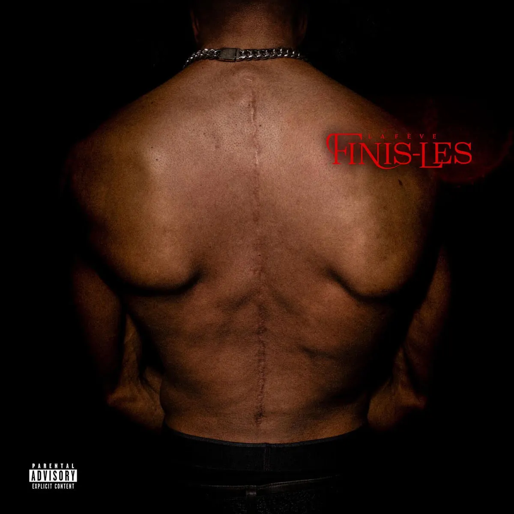

Publié le 3 novembre 2026

La Fève a sorti son premier album FINIS-LES le 23 octobre 2026 chez Walone. Le projet de 23 titres entre directement à la troisième place du top albums en France.
Quels résultats réalise l'album FINIS-LES sur les plateformes ?
L'album entre à la troisième position des ventes en France selon le classement hebdomadaire MusicBiz. Le projet accumule plus de 13 millions d'écoutes sur Spotify en une semaine d'exploitation.
Le single éponyme cumule plus de 10 millions de lectures d'après la fiche Spotify du titre. Les morceaux récents comme APPELLE LA POLICE franchissent déjà les 500 000 écoutes. Pour accompagner ce volume de 23 pistes, l'artiste prévoit une tournée des Zéniths en février et mars 2027.
Cette réussite valide une stratégie d'autoproduction stricte. La Fève conserve la propriété de ses masters chez Walone et confie la distribution à Sony Music Entertainment France. La longueur du format de 59 minutes ne freine pas l'écoute globale sur les plateformes.
Quelle est la tracklist et les invités de l'album FINIS-LES ?
La sélection des collaborateurs associe des figures reconnues et des noms de la nouvelle garde. L'album réserve une large place aux artistes indépendants issus du circuit underground.
| Artiste invité | Titre du morceau | Profil de l'invité |
|---|---|---|
| Bedry & 63KLUF | NAN! | Duo underground en pleine ascension |
| Flacko Cram | RR | Figure émergente de la trap indépendante |
| Théodora | APPELLE LA POLICE | Révélation alternative et virale |
| 1Pliké140 | RS CARBON | Tête d'affiche de la drill française |
| Rim'K | Ville | Légende et pilier historique du rap français |
Comment La Fève intègre-t-il la nouvelle scène underground ?
La Fève intègre la nouvelle scène underground en offrant des duos directs sur son premier album officiel. Le morceau NAN! réunit Bedry et 63KLUF sur des sonorités denses. Le rappeur Flacko Cram s'illustre sur la piste RR avec un style trap incisif.
Cette démarche donne une visibilité immédiate à des artistes autoproduits. Au lieu d'accumuler des têtes d'affiche commerciales, le projet valorise des esthétiques brutes et émergentes. L'album fonctionne comme une vitrine pour ces talents indépendants.
L'équilibre sonore évite le simple effet d'annonce. La Fève partage son espace sans lisser sa propre identité musicale. Pour prolonger cette découverte de talents émergents, consultez notre sélection des nouveaux rappeurs à suivre.
Le format de 23 titres est-il entièrement maîtrisé ?
Proposer 23 morceaux représente un pari ambitieux pour un premier album. Plusieurs titres restent sous la barre des trois minutes. Ce rythme court préserve la dynamique d'écoute globale.
Certains passages répétitifs apparaissent néanmoins dans la seconde moitié de l'album. Quelques morceaux ressemblent à des esquisses de studio plutôt qu'à des titres aboutis. Le projet gagne en densité mais perd parfois en concision.
L'ensemble conserve une cohérence grâce au travail de beatmakers comme Kosei et Lyele. La Fève prouve sa capacité à porter un long format sans renier son autonomie artistique.